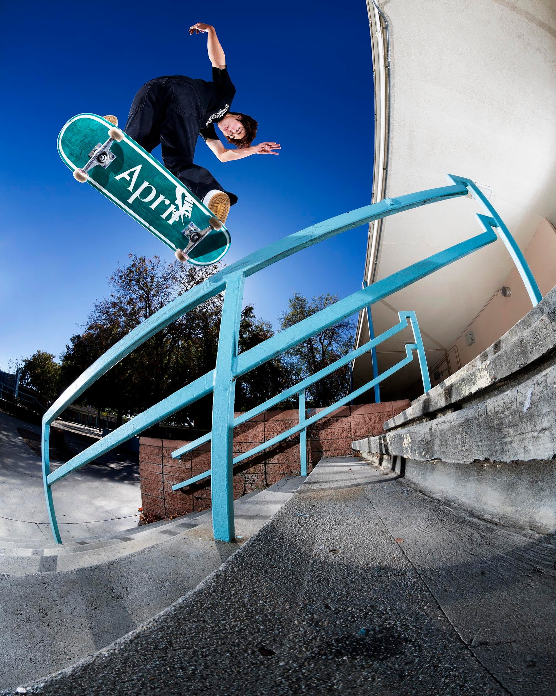

SKATEBOARD:
Mucho más que una tabla con ruedas
Nacido en las calles y alimentado por la creatividad, el skateboard es más que un deporte: es una forma de vida. Desde sus inicios en la California de los años 50 hasta su presencia en los Juegos Olímpicos, el skate ha conquistado el asfalto, los parques y el corazón de generaciones enteras. Una mezcla de libertad, estilo y rebeldía que sigue rodando con fuerza en todo el mundo.

Tipos de skate:
- Longboard:
- Cruise:
- Skateboard clasico:
- Old School:
Más largo, ideal para velocidad, downhill y cruising.

Más compacto que el longboard, cómodo para desplazarse por la ciudad.

Usado para trucos en calles y parques (street y park).

Diseño retro, usado en rampas o bowl skating.

Marcas de Skate:
| Marcas de skate | Origen | Año de fundación |
|---|---|---|
| Element | Estados Unidos | 1992 |
| Santa Cruz | Estados Unidos | 1973 |
| Plan B | Estados Unidos | 1991 |

Revistas iconicas:
Contacto:
jgonzalesra@unsa.edu.pe